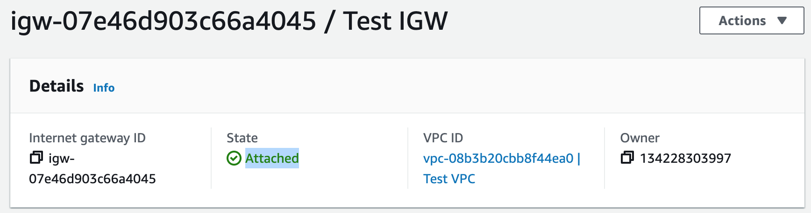

AWS CloudFormation Project
This project involves deploying a dynamic web application as Infrastructure as Code (IaC) using AWS CloudFormation and a LAMP stack. We will build CloudFormation templates, and we will create stacks for AWS services such as: VPC (public and private subnets in two different availability zones), NAT Gateway, RDS, Application Load Balancer (ALB), Auto Scaling Group (ASG), and Route 53.
Project Code on GitHub: CloudFormation
Step 1: Create VPC with Public and Private Subnets
In this step, we will create our VPC by using CloudFormation. The syntax of our code will be YAML.VPC Template
1. Upload our code to AWS CloudFormation. 2. In our template, we started by adding:
- AWSTemplateFormatVersion
- Description
- Metadata
- Parameters
AWSTemplateFormatVersion: 2010-09-09
Description:
This template creates a VPC with public and private subnets.
# The following metadata is used to group the parameters
Metadata:
AWS::CloudFormation::Interface:
ParameterGroups:
-
Label:
default: "VPC CIDR"
Parameters:
- VpcCIDR
-
Label:
default: "Subnet CIDR"
Parameters:
- PublicSubnet1CIDR
- PublicSubnet2CIDR
- PrivateAppSubnet1CIDR
- PrivateAppSubnet2CIDR
- PrivateDataSubnet1CIDR
- PrivateDataSubnet2CIDR
-
Label:
default: "SSH CIDR"
Parameters:
- SSHLocation
# Parameters are used to to build flexible CloudFormation templates
Parameters:
VpcCIDR:
Default: 10.0.0.0/16
Description: Please enter the IP range (CIDR notation) for this VPC.
Type: String
PublicSubnet1CIDR:
Default: 10.0.0.0/24
Description: Please enter the IP range (CIDR notation) for public subnet 1.
Type: String
PublicSubnet2CIDR:
Default: 10.0.1.0/24
Description: Please enter the IP range (CIDR notation) for public subnet 2.
Type: String
PrivateAppSubnet1CIDR:
Default: 10.0.2.0/24
Description: Please enter the IP range (CIDR notation) for private app subnet 1.
Type: String
PrivateAppSubnet2CIDR:
Default: 10.0.3.0/24
Description: Please enter the IP range (CIDR notation) for private app subnet 2.
Type: String
PrivateDataSubnet1CIDR:
Default: 10.0.4.0/24
Description: Please enter the IP range (CIDR notation) for private data subnet 1.
Type: String
PrivateDataSubnet2CIDR:
Default: 10.0.5.0/24
Description: Please enter the IP range (CIDR notation) for private data subnet 2.
Type: String
SSHLocation:
AllowedPattern: '(\d{1,3})\.(\d{1,3})\.(\d{1,3})\.(\d{1,3})/(\d{1,2})'
ConstraintDescription: Must be a valid IP CIDR range in the form of x.x.x.x/x.
Default: 0.0.0.0/0
Description: The IP address range that can be used to access the web server using SSH.
MaxLength: '18'
MinLength: '9'
Type: String
3. We built our VPC.
Resources:
# Create VPC
VPC:
Type: AWS::EC2::VPC
Properties:
CidrBlock: !Ref VpcCIDR
EnableDnsHostnames: true
EnableDnsSupport: true
InstanceTenancy: default
Tags:
- Key: Name
Value: Test VPC

# Create Internet Gateway
InternetGateway:
Type: AWS::EC2::InternetGateway
Properties:
Tags:
- Key: Name
Value: Test IGW
# Attach Internet Gateway to VPC
InternetGatewayAttachment:
Type: AWS::EC2::VPCGatewayAttachment
Properties:
InternetGatewayId: !Ref InternetGateway
VpcId: !Ref VPC

5. We created our subnets.
# Create Public Subnet1
PublicSubnet1:
Type: AWS::EC2::Subnet
Properties:
AvailabilityZone: !Select [ 0, !GetAZs '' ]
CidrBlock: !Ref PublicSubnet1CIDR
MapPublicIpOnLaunch: true
Tags:
- Key: Name
Value: Public Subnet 1
VpcId: !Ref VPC
# Create Public Subnet2
PublicSubnet2:
Type: AWS::EC2::Subnet
Properties:
AvailabilityZone: !Select [ 1, !GetAZs '' ]
CidrBlock: !Ref PublicSubnet2CIDR
MapPublicIpOnLaunch: true
Tags:
- Key: Name
Value: Public Subnet 2
VpcId: !Ref VPC
# Create Private App Subnet1
PrivateAppSubnet1:
Type: AWS::EC2::Subnet
Properties:
AvailabilityZone: !Select [ 0, !GetAZs '' ]
CidrBlock: !Ref PrivateAppSubnet1CIDR
MapPublicIpOnLaunch: false
Tags:
- Key: Name
Value: Private App Subnet 1
VpcId: !Ref VPC
# Create Private App Subnet2
PrivateAppSubnet2:
Type: AWS::EC2::Subnet
Properties:
AvailabilityZone: !Select [ 1, !GetAZs '' ]
CidrBlock: !Ref PrivateAppSubnet2CIDR
MapPublicIpOnLaunch: false
Tags:
- Key: Name
Value: Private App Subnet 2
VpcId: !Ref VPC
# Create Private Data Subnet1
PrivateDataSubnet1:
Type: AWS::EC2::Subnet
Properties:
AvailabilityZone: !Select [ 0, !GetAZs '' ]
CidrBlock: !Ref PrivateDataSubnet1CIDR
MapPublicIpOnLaunch: false
Tags:
- Key: Name
Value: Private Data Subnet 1
VpcId: !Ref VPC
# Create Private Data Subnet2
PrivateDataSubnet2:
Type: AWS::EC2::Subnet
Properties:
AvailabilityZone: !Select [ 1, !GetAZs '' ]
CidrBlock: !Ref PrivateDataSubnet2CIDR
MapPublicIpOnLaunch: false
Tags:
- Key: Name
Value: Private Data Subnet 2
VpcId: !Ref VPC
6. We created a public route table.
# Create Route Table
PublicRouteTable:
Type: AWS::EC2::RouteTable
Properties:
Tags:
- Key: Name
Value: Public Route Table
VpcId: !Ref VPC
# Add a Public Route to make it a Public Route Table
PublicRoute:
Type: AWS::EC2::Route
Properties:
DestinationCidrBlock: 0.0.0.0/0
GatewayId: !Ref InternetGateway
RouteTableId: !Ref PublicRouteTable
# Associate Public Subnet1 with Public Route Table
PublicSubnet1RouteTableAssociation:
Type: AWS::EC2::SubnetRouteTableAssociation
Properties:
RouteTableId: !Ref PublicRouteTable
SubnetId: !Ref PublicSubnet1
# Associate Public Subnet2 with Public Route Table
PublicSubnet2RouteTableAssociation:
Type: AWS::EC2::SubnetRouteTableAssociation
Properties:
RouteTableId: !Ref PublicRouteTable
SubnetId: !Ref PublicSubnet2
7. We created our security groups.
# Create Security Group for the Application Load Balancer
ALBSecurityGroup:
Type: AWS::EC2::SecurityGroup
Properties:
GroupDescription: Enables HTTP/HTTPS access on port 80/443.
SecurityGroupIngress:
- IpProtocol: tcp
FromPort: 80
ToPort: 80
CidrIp: 0.0.0.0/0
- IpProtocol: tcp
FromPort: 443
ToPort: 443
CidrIp: 0.0.0.0/0
Tags:
- Key: Name
Value: ALB Security Group
VpcId: !Ref VPC
# Create Security Group for the Bastion Host aka Jump Box
SSHSecurityGroup:
Type: AWS::EC2::SecurityGroup
Properties:
GroupDescription: Enables SSH access on port 22.
SecurityGroupIngress:
- IpProtocol: tcp
FromPort: 22
ToPort: 22
CidrIp: !Ref SSHLocation
Tags:
- Key: Name
Value: SSH Security Group
VpcId: !Ref VPC
# Create Security Group for the Web Servers
WebserverSecurityGroup:
Type: AWS::EC2::SecurityGroup
Properties:
GroupDescription: Enables HTTP/HTTPS access via port 80/443 from ALB and SSH security group.
SecurityGroupIngress:
- IpProtocol: tcp
FromPort: 80
ToPort: 80
SourceSecurityGroupId: !Ref ALBSecurityGroup
- IpProtocol: tcp
FromPort: 443
ToPort: 443
SourceSecurityGroupId: !Ref ALBSecurityGroup
- IpProtocol: tcp
FromPort: 22
ToPort: 22
SourceSecurityGroupId: !Ref SSHSecurityGroup
Tags:
- Key: Name
Value: Webserver Security Group
VpcId: !Ref VPC
# Create Security Group for the Database
DatabaseSecurityGroup:
Type: AWS::EC2::SecurityGroup
Properties:
GroupDescription: Open database for access.
SecurityGroupIngress:
- IpProtocol: tcp
FromPort: 3306
ToPort: 3306
SourceSecurityGroupId: !Ref WebserverSecurityGroup
Tags:
- Key: Name
Value: Database Security Group
VpcId: !Ref VPC
8. We also needed to create an outputs section. We'll use outputs to export some information about our VPC so we can reference the information in another CloudFormation template.
# Create outputs to export some information about our VPC so we can reference the information in another CloudFormation template.
Outputs:
VPC:
Description: VPC ID
Export:
Name: !Sub ${AWS::StackName}-VPC
Value: !Ref VPC
PublicSubnet1:
Description: Public Subnet 1 ID
Export:
Name: !Sub ${AWS::StackName}-PublicSubnet1
Value: !Ref PublicSubnet1
PublicSubnet2:
Description: Public Subnet 2 ID
Export:
Name: !Sub ${AWS::StackName}-PublicSubnet2
Value: !Ref PublicSubnet2
PrivateAppSubnet1:
Description: Private App Subnet 1 ID
Export:
Name: !Sub ${AWS::StackName}-PrivateAppSubnet1
Value: !Ref PrivateAppSubnet1
PrivateAppSubnet2:
Description: Private App Subnet 2 ID
Export:
Name: !Sub ${AWS::StackName}-PrivateAppSubnet2
Value: !Ref PrivateAppSubnet2
PrivateDataSubnet1:
Description: Private Data Subnet 1 ID
Export:
Name: !Sub ${AWS::StackName}-PrivateDataSubnet1
Value: !Ref PrivateDataSubnet1
PrivateDataSubnet2:
Description: Private Data Subnet 2 ID
Export:
Name: !Sub ${AWS::StackName}-PrivateDataSubnet2
Value: !Ref PrivateDataSubnet2
ALBSecurityGroup:
Description: Application Load Balancer Security Group ID
Export:
Name: !Sub ${AWS::StackName}-ALBSecurityGroup
Value: !Ref ALBSecurityGroup
SSHSecurityGroup:
Description: SSH Security Group ID
Export:
Name: !Sub ${AWS::StackName}-SSHSecurityGroup
Value: !Ref SSHSecurityGroup
WebserverSecurityGroup:
Description: Webserver Security Group ID
Export:
Name: !Sub ${AWS::StackName}-WebserverSecurityGroup
Value: !Ref WebserverSecurityGroup
DatabaseSecurityGroup:
Description: Database Security Group ID
Export:
Name: !Sub ${AWS::StackName}-DatabaseSecurityGroup
Value: !Ref DatabaseSecurityGroup
Step 2: Create NAT Gateways
In this step, we will create NAT gateways in our public subnets to allow instances in our private subnets to gain access to the Internet.NAT Gateways Template
1. We are going to create another stack (With new resources (standard)). 2. In our template, we started by adding:
- AWSTemplateFormatVersion
- Description
- Parameters
AWSTemplateFormatVersion: 2010-09-09
Description: This template creates a NAT gateway in each of the public subnets.
Parameters:
ExportVpcStackName:
Description: The name of the VPC stack that exports values.
Type: String
3. With this build, we allocated two elastic IPs.
Resources:
# Allocate Elastic IP Address (EIP 1)
NatGateway1EIP:
Type: AWS::EC2::EIP
Properties:
Domain: VPC
Tags:
- Key: Name
Value: EIP 1
# Allocate Elastic IP Address (EIP 2)
NatGateway2EIP:
Type: AWS::EC2::EIP
Properties:
Domain: VPC
Tags:
- Key: Name
Value: EIP 2
4. We created NAT gateway 1 in public subnet 1.
# Create NAT Gateway 1 in Public Subnet 1
NatGateway1:
Type: AWS::EC2::NatGateway
Properties:
AllocationId: !GetAtt NatGateway1EIP.AllocationId
SubnetId:
Fn::ImportValue: !Sub ${ExportVpcStackName}-PublicSubnet1
Tags:
- Key: Name
Value: NAT Gateway Public Subnet 1

# Create NAT Gateway 2 in Public Subnet 2
NatGateway2:
Type: AWS::EC2::NatGateway
Properties:
AllocationId: !GetAtt NatGateway2EIP.AllocationId
SubnetId:
Fn::ImportValue: !Sub ${ExportVpcStackName}-PublicSubnet2
Tags:
- Key: Name
Value: NAT Gateway Public Subnet 2
6. We created a private route table 1, which routes traffic to the Internet through NAT gateway 1, and is associated with private app and private data subnet 1.
# Create Private Route Table 1
PrivateRouteTable1:
Type: AWS::EC2::RouteTable
Properties:
Tags:
- Key: Name
Value: Private Route Table 1
VpcId:
Fn::ImportValue: !Sub ${ExportVpcStackName}-VPC
# Add a route to point internet-bound traffic to NAT Gateway 1
PrivateRoute1:
Type: AWS::EC2::Route
Properties:
DestinationCidrBlock: 0.0.0.0/0
NatGatewayId: !Ref NatGateway1
RouteTableId: !Ref PrivateRouteTable1
# Associate Private App Subnet 1 with Private Route Table 1
PrivateAppSubnet1RouteTableAssociation:
Type: AWS::EC2::SubnetRouteTableAssociation
Properties:
RouteTableId: !Ref PrivateRouteTable1
SubnetId:
Fn::ImportValue: !Sub ${ExportVpcStackName}-PrivateAppSubnet1
# Associate Private Data Subnet 1 with Private Route Table 1
PrivateDataSubnet1RouteTableAssociation:
Type: AWS::EC2::SubnetRouteTableAssociation
Properties:
RouteTableId: !Ref PrivateRouteTable1
SubnetId:
Fn::ImportValue: !Sub ${ExportVpcStackName}-PrivateDataSubnet1
7. We created a private route table 2, which routes traffic to the Internet through NAT gateway 2, and is associated with private app and private data subnet 2.
# Create Private Route Table 2
PrivateRouteTable2:
Type: AWS::EC2::RouteTable
Properties:
Tags:
- Key: Name
Value: Private Route Table 2
VpcId:
Fn::ImportValue: !Sub ${ExportVpcStackName}-VPC
# Add a route to point internet-bound traffic to NAT Gateway 2
PrivateRoute2:
Type: AWS::EC2::Route
Properties:
DestinationCidrBlock: 0.0.0.0/0
NatGatewayId: !Ref NatGateway2
RouteTableId: !Ref PrivateRouteTable2
# Associate Private App Subnet 2 with Private Route Table 2
PrivateAppSubnet2RouteTableAssociation:
Type: AWS::EC2::SubnetRouteTableAssociation
Properties:
RouteTableId: !Ref PrivateRouteTable2
SubnetId:
Fn::ImportValue: !Sub ${ExportVpcStackName}-PrivateAppSubnet2
# Associate Private Data Subnet 2 with Private Route Table 2
PrivateDataSubnet2RouteTableAssociation:
Type: AWS::EC2::SubnetRouteTableAssociation
Properties:
RouteTableId: !Ref PrivateRouteTable2
SubnetId:
Fn::ImportValue: !Sub ${ExportVpcStackName}-PrivateDataSubnet2
Step 3: Create an RDS Database From DB Snapshot
In this step, we will use CloudFormation to build an RDS MySQL database by restoring it from a snapshot.RDS Template
1. We are going to create another stack (With new resources (standard)). 2. In our template, we started by adding:
- AWSTemplateFormatVersion
- Description
- Metadata
- Parameters
AWSTemplateFormatVersion: 2010-09-09
Description: This template creates an RDS DB instance that is restored from a DB snapshot.
# The following metadata is used to group the parameters
Metadata:
AWS::CloudFormation::Interface:
ParameterGroups:
-
Label:
default: Export VPC Stack Name
Parameters:
- ExportVpcStackName
-
Label:
default: Database Parameters
Parameters:
- DatabaseInstanceIdentifier
- DatabaseSnapshotIdentifier
- DatabaseInstanceClass
- MultiAZDatabase
# Parameters are used to to build flexible CloudFormation templates
Parameters:
ExportVpcStackName:
Description: The name of the VPC stack that exports values.
Type: String
DatabaseInstanceIdentifier:
AllowedPattern: '[a-zA-Z][a-zA-Z0-9]*'
ConstraintDescription: Must begin with a letter and contain only alphanumeric characters.
Default: mysqldb
Description: Instance identifier name.
MaxLength: 60
MinLength: 1
Type: String
DatabaseSnapshotIdentifier:
Description: The ARN of the DB snapshot that's used to restore the DB instance.
Type: String
DatabaseInstanceClass:
AllowedValues:
- db.t1.micro
- db.t2.micro
- db.m1.small
- db.m1.medium
- db.m1.large
ConstraintDescription: Must select a valid database instance type.
Default: db.t2.micro
Description: The database instance type.
Type: String
MultiAZDatabase:
AllowedValues:
- true
- false
ConstraintDescription: Must be true or false.
Default: false
Description: Create a Multi-AZ MySQL Amazon RDS database instance.
Type: String
3. With this build, we created a database subnet group.
Resources:
# Create database subnet group
DatabaseSubnetGroup:
Type: AWS::RDS::DBSubnetGroup
Properties:
DBSubnetGroupDescription: Subnet group for RDS database.
SubnetIds:
- Fn::ImportValue: !Sub ${ExportVpcStackName}-PrivateDataSubnet1
- Fn::ImportValue: !Sub ${ExportVpcStackName}-PrivateDataSubnet2
Tags:
- Key: Name
Value: Database Subnets
4. And we created an RDS MySQL database from a snapshot.
# Create database from RDS snapshot
DatabaseInstance:
Type: AWS::RDS::DBInstance
Properties:
AvailabilityZone: !Select [ 0, !GetAZs '' ]
DBInstanceClass: !Ref DatabaseInstanceClass
DBInstanceIdentifier: !Ref DatabaseInstanceIdentifier
DBSnapshotIdentifier: !Ref DatabaseSnapshotIdentifier
DBSubnetGroupName: !Ref DatabaseSubnetGroup
Engine: MySQL
MultiAZ: !Ref MultiAZDatabase
VPCSecurityGroups:
- Fn::ImportValue: !Sub ${ExportVpcStackName}-DatabaseSecurityGroup
Step 4: Create an Application Load Balancer
In this step, we will use CloudFormation to build an application load balancer.ALB Template
1. We are going to create another stack (With new resources (standard)). 2. In our template, we started by adding:
- AWSTemplateFormatVersion
- Description
- Metadata
- Parameters
AWSTemplateFormatVersion: 2010-09-09
Description: This template creates an Application Load Balancer.
# The following metadata is used to group the parameters
Metadata:
AWS::CloudFormation::Interface:
ParameterGroups:
-
Label:
default: "Certificate ARN"
Parameters:
- AcmCertificate
-
Label:
default: "Export VPC Stack Name"
Parameters:
- ExportVpcStackName
# Parameters are used to to build flexible CloudFormation templates
Parameters:
AcmCertificate:
Description: The ARN of the AWS Certification Manager's certificate.
Type: String
ExportVpcStackName:
Description: The name of the vpc stack that exports values.
Type: String
3. With this build, we created an application load balancer.
Resources:
#Create an Application Load Balancer
ApplicationLoadBalancer:
Type: AWS::ElasticLoadBalancingV2::LoadBalancer
Properties:
Name: ALB
SecurityGroups:
- Fn::ImportValue: !Sub ${ExportVpcStackName}-ALBSecurityGroup
Subnets:
- Fn::ImportValue: !Sub ${ExportVpcStackName}-PublicSubnet1
- Fn::ImportValue: !Sub ${ExportVpcStackName}-PublicSubnet2
4. We created listeners on port 80 and port 443.
#Create a Listener on Port 80
ALBListenerNoSslCertificate:
Type: 'AWS::ElasticLoadBalancingV2::Listener'
Properties:
DefaultActions:
- RedirectConfig:
Host: '#{host}'
Path: '/#{path}'
Port: '443'
Protocol: HTTPS
StatusCode: HTTP_301
Type: redirect
LoadBalancerArn: !Ref ApplicationLoadBalancer
Port: 80
Protocol: HTTP
#Create a Listener on Port 443
ALBListenerSslCertificate:
Type : AWS::ElasticLoadBalancingV2::Listener
Properties:
Certificates:
- CertificateArn: !Ref AcmCertificate
DefaultActions:
- Type: forward
TargetGroupArn: !Ref ALBTargetGroup
LoadBalancerArn: !Ref ApplicationLoadBalancer
Port: 443
Protocol: HTTPS
5. We created a target group.
# Create a Target Group
ALBTargetGroup:
Type: AWS::ElasticLoadBalancingV2::TargetGroup
Properties:
HealthCheckIntervalSeconds: 10
HealthCheckPath: /
HealthCheckTimeoutSeconds: 5
HealthyThresholdCount: 2
Matcher:
HttpCode: 200,302
Name: Webserver-TG
Port: 80
Protocol: HTTP
UnhealthyThresholdCount: 5
VpcId:
Fn::ImportValue: !Sub ${ExportVpcStackName}-VPC
6. Finally, we created an outputs section.
Outputs:
# Export Target Group
ALBTargetGroup:
Description: Webserver target group
Export:
Name: !Sub ${AWS::StackName}-ALBTargetGroup
Value: !Ref ALBTargetGroup
# Export Application Load Balancer Dns Name
ApplicationLoadBalancerDnsName:
Description: Application load balancer DNS name
Export:
Name: !Sub ${AWS::StackName}-ApplicationLoadBalancerDnsName
Value: !GetAtt ApplicationLoadBalancer.DNSName
# Export Application Load Balancer Zone ID
ApplicationLoadBalancerZoneID:
Description: Application load balancer canonical hosted zone ID
Export:
Name: !Sub ${AWS::StackName}-ApplicationLoadBalancerZoneID
Value: !GetAtt ApplicationLoadBalancer.CanonicalHostedZoneID
Step 5: Create an Auto Scaling Group
In this step, we will use CloudFormation to build an auto scaling group.ASG Template
1. We are going to create another stack (With new resources (standard)). 2. In our template, we started by adding:
- AWSTemplateFormatVersion
- Description
- Metadata
- Parameters
AWSTemplateFormatVersion: 2010-09-09
Description: This template creates an Auto Scaling Group.
# The following metadata is used to group the parameters
Metadata:
AWS::CloudFormation::Interface:
ParameterGroups:
-
Label:
default: Export VPC Stack Name
Parameters:
- ExportVpcStackName
-
Label:
default: Export ALB Stack Name
Parameters:
- ExportAlbStackName
-
Label:
default: Email Address
Parameters:
- OperatorEmail
-
Label:
default: Image ID
Parameters:
- EC2ImageID
-
Label:
default: Launch Template Name
Parameters:
- WebServerLaunchTemplateName
-
Label:
default: Instance Type
Parameters:
- InstanceType
-
Label:
default: EC2 KeyPair
Parameters:
- EC2KeyName
# Parameters are used to to build flexible CloudFormation templates
Parameters:
ExportVpcStackName:
Description: The name of the VPC stack that exports values.
Type: String
ExportAlbStackName:
Description: The name of the ALB stack that exports values.
Type: String
OperatorEmail:
Description: A valid email address to notify if there are any scaling operations.
Type: String
EC2KeyName:
Description: Name of your EC2 KeyPair to enable SSH access to the instance.
Type: AWS::EC2::KeyPair::KeyName
ConstraintDescription: Must be the name of an existing EC2 KeyPair.
EC2ImageID:
Description: The ID of the custom AMI.
Type: String
WebServerLaunchTemplateName:
AllowedPattern: '[a-zA-Z0-9\(\)\.\-/_]+'
ConstraintDescription: Must be unique to this account. Max 128 chars. No spaces or special characters like '&', '*', '@'.
Default: Lamp-Server-Launch-Template
Description: Name of launch template.
Type: String
InstanceType:
Description: Webservers EC2 instance type.
Type: String
Default: t2.micro
AllowedValues:
- t1.micro
- t2.nano
- t2.micro
- t2.small
ConstraintDescription: Must be a valid EC2 instance type.
3. In this build, we created a launch template.
Resources:
# Create a launch template
WebServerLaunchTemplate:
Type: AWS::EC2::LaunchTemplate
Properties:
LaunchTemplateName: !Ref WebServerLaunchTemplateName
LaunchTemplateData:
ImageId: !Ref EC2ImageID
InstanceType: !Ref InstanceType
KeyName: !Ref EC2KeyName
Monitoring:
Enabled: true
SecurityGroupIds:
- Fn::ImportValue: !Sub ${ExportVpcStackName}-WebserverSecurityGroup
4. We created a notification topic for our auto scaling group.
# Create a notification topic
NotificationTopic:
Type: AWS::SNS::Topic
Properties:
Subscription:
- Endpoint: !Ref OperatorEmail
Protocol: email
5. We created our auto scaling group.
# Create an auto scaling group
WebServerAutoScalingGroup:
Type: AWS::AutoScaling::AutoScalingGroup
Properties:
AutoScalingGroupName: ASG
VPCZoneIdentifier:
- Fn::ImportValue: !Sub ${ExportVpcStackName}-PrivateAppSubnet1
- Fn::ImportValue: !Sub ${ExportVpcStackName}-PrivateAppSubnet2
HealthCheckGracePeriod: 300
HealthCheckType: ELB
LaunchTemplate:
LaunchTemplateName: !Ref WebServerLaunchTemplateName
Version: !GetAtt WebServerLaunchTemplate.LatestVersionNumber
MinSize: 1
MaxSize: 3
DesiredCapacity: 2
Tags:
- Key: Name
Value: WebserverASG
PropagateAtLaunch: true
TargetGroupARNs:
- Fn::ImportValue: !Sub ${ExportAlbStackName}-ALBTargetGroup
NotificationConfiguration:
TopicARN: !Ref NotificationTopic
NotificationTypes:
- 'autoscaling:EC2_INSTANCE_LAUNCH'
- 'autoscaling:EC2_INSTANCE_LAUNCH_ERROR'
- 'autoscaling:EC2_INSTANCE_TERMINATE'
- 'autoscaling:EC2_INSTANCE_TERMINATE_ERROR'
WebServerScaleUpPolicy:
Type: AWS::AutoScaling::ScalingPolicy
Properties:
AdjustmentType: ChangeInCapacity
AutoScalingGroupName: !Ref WebServerAutoScalingGroup
Cooldown: 60
ScalingAdjustment: 1
WebServerScaleDownPolicy:
Type: 'AWS::AutoScaling::ScalingPolicy'
Properties:
AdjustmentType: ChangeInCapacity
AutoScalingGroupName: !Ref WebServerAutoScalingGroup
Cooldown: 60
ScalingAdjustment: -1
CPUAlarmHigh:
Type: AWS::CloudWatch::Alarm
Properties:
AlarmDescription: Scale-up if CPU > 90% for 10 minutes.
MetricName: CPUUtilization
Namespace: AWS/EC2
Statistic: Average
Period: 300
EvaluationPeriods: 2
Threshold: 90
AlarmActions:
- !Ref WebServerScaleUpPolicy
Dimensions:
- Name: AutoScalingGroupName
Value: !Ref WebServerAutoScalingGroup
ComparisonOperator: GreaterThanThreshold
CPUAlarmLow:
Type: AWS::CloudWatch::Alarm
Properties:
AlarmDescription: Scale-down if CPU < 70% for 10 minutes.
MetricName: CPUUtilization
Namespace: AWS/EC2
Statistic: Average
Period: 300
EvaluationPeriods: 2
Threshold: 70
AlarmActions:
- !Ref WebServerScaleDownPolicy
Dimensions:
- Name: AutoScalingGroupName
Value: !Ref WebServerAutoScalingGroup
ComparisonOperator: LessThanThreshold
Our webservers:

Step 6: Create an Record Set in Route 53
In this step, we will use CloudFormation to build a record set in Route 53.Route 53 Template
1. We are going to create another stack (With new resources (standard)). 2. In our template, we started by adding:
- AWSTemplateFormatVersion
- Description
- Metadata
- Parameters
AWSTemplateFormatVersion: 2010-09-09
Description: This template creates a record in Route 53.
# The following metadata is used to group the parameters
Metadata:
AWS::CloudFormation::Interface:
ParameterGroups:
-
Label:
default: Export ALB Stack Name
Parameters:
- ExportAlbStackName
-
Label:
default: Domain Name
Parameters:
- DomainName
# Parameters are used to to build flexible CloudFormation templates
Parameters:
ExportAlbStackName:
Description: The name of the ALB stack that exports values.
Type: String
DomainName:
Description: The main domain name of the site (e.g. example.com).
Type: String
Default: jrcworks.com
3. In this step, we created a record set for our domain.
Resources:
# Create record set
SiteDomainName:
Type: AWS::Route53::RecordSetGroup
Properties:
HostedZoneName: !Join ['', [!Ref DomainName, '.']]
RecordSets:
- Name: !Join
- ''
- - 'www.'
- !Ref DomainName
Type: A
AliasTarget:
HostedZoneId:
Fn::ImportValue: !Sub ${ExportAlbStackName}-ApplicationLoadBalancerZoneID
DNSName:
Fn::ImportValue: !Sub ${ExportAlbStackName}-ApplicationLoadBalancerDnsName
4. We created an outputs section.
# Create outputs to export some information about our VPC so we can reference the information in another CloudFormation template.
Outputs:
WebsiteURL:
Value: !Join
- ''
- - 'https://www.'
- 'jrcworks.com'
Our web app is now accessible.